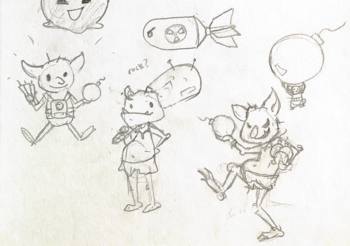
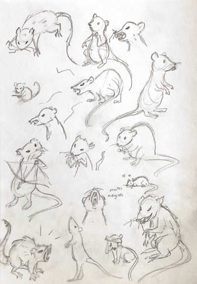
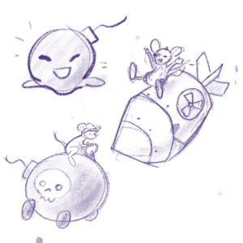

Character Design
My general character design workflow was to gather information on the enemy's movement and attack styles, experiement with different animals or shapes, then focus on the clothing and poses. Here was my process for designing a suicide enemy that rushes the player and blows up.


